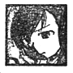

トップ / みつどもえ / キャラクター / 主な学校関係者
［海江田］ 漫画『みつどもえ』に登場するキャラクター
海江田
コミックス紹介文
海江田
６年１組の担任。２９歳。通称三十路。お肌の曲がり角に差しかかり、女子生徒の肌艶を妬む。イケメン好き。
柱紹介文
海江田①
６年１組の担任。みつばたち６年３組の面々には”三十路”という呼び名でウザがられているが29歳。クリスマス、バレンタインなど色恋絡みの時期にはこと荒れる。
海江田②
６年１組の担任。みつばたち６年３組の面々には”三十路”という呼び名でウザがられているが29歳…。
海江田③
６年１組の担任。みつばたち６年３組の面々には”三十路”という呼び名でウザがられているが29歳。クリスマスなど色恋絡みのシーズンには、こと荒れる。貧乳。
海江田④
６年１組の担任。みつばたち６年３組の面々には”三十路”という呼び名でウザがられているが、ギリギリ29歳。
海江田⑤
６年１組の担任。６年３組の面々には”三十路”と呼ばれているが29歳。
海江田⑥
６年１組の担任。みつばたち６年３組の面々には”三十路”という呼び名でウザがられているが29歳。色恋絡みのイベントの時期にはこと荒れる。
柱紹介文カット
 | 元絵は211卵性「親切な海江田さん」の１ページ目、女友達の結婚式の翌日「女同士に友情なんてないのよ」と言って黄昏れるコマより。 |
上記に掲載した画像は資料としての必要性から『みつどもえ』『週刊少年チャンピオン』『別冊少年チャンピオン』（秋田書店）誌上より引用させていただいているものであり、全ての著作権は原権利者に属します。
登場エピソード
◎主役 〇準主役 ▲重要 △ちょい役 ？微妙
| 0009 | 話数 | サブタイトル | 収録 | 役回り | |
|---|---|---|---|---|---|
| 0270 | 27 | 「アンドロイドは誰のパンツを見るか？」 | ２巻 | 女子生徒に混じって佐藤を追いかけ回す。 | |
| 0390 | 39 | 「花粉少女警報」 | ２巻 | 最初のコマ。花粉症のひとり。 | |
| 0780 | 78 | 「そのとき おっぱいが動いた」 | ４巻 | おっぱいが動いたと矢部が驚くコマ。 | |
| 0860 | 86 | 「魔女っ娘つくえちゃん」 | ５巻 | △ | みつばたちに予備の机はもうないと突っぱねる。 |
| 1110 | 111 | 「同じ空の下の上」 | ６巻 | リレーのアンカー勝負で矢部に遅れる。 | |
| 1270 | 127 | 「だまりスケッチ」 | ７巻 | ◎ | 担任代理で３組に。ふたばの出すカンペに翻弄される。 |
| 1300 | 130 | 「バレンタイン・ギスギス」 | ７巻 | 土足でダッシュする矢部を咎める。 | |
| 1570 | 157 | 「妄想少女肉食系」 | ９巻 | ◎ | 日差しを恐れる。ひとはのもち肌の秘訣を知りたい。 |
| 1690 | 169 | 「サンタが廻ってやってくる」 | ９巻 | クリスマスをつぶそうと企む悪い魔女。 | |
| 1720 | 172 | 「神の三十路るセカイ」 | ９巻 | ◎ | 加工した写真を見た宇宙人雑誌の編集長が会いに来る。 |
| 2110 | 211 | 「親切な海江田さん」 | １１巻 | ◎ | 友人の結婚式でやさぐれる。恋の芽を摘むために奔走。 |
| 2200 | 220 | 「飼い猫オーブーラン」 | １２巻 | 〇 | みつばをマークして、男への媚び方をこっそり観察。 |
| 2210 | 221 | 「ミュージックアザーズ」 | １２巻 | 松岡の心霊テープが教師に好評。 | |
| 2250 | 225 | 「みつばナンバーワン!!」 | １２巻 | △ | 「ここはキャバクラか!!」のツッコミ。 |
| 2280 | 228 | 「先生への楽しい謝り方」 | １２巻 | 先生が怒って教室を出て行く話。 | |
| 2390 | 239 | 「サンタが息巻いてやってくる」 | １３巻 | ◎ | 子供にサンタの真実を知らしめようと杉崎家に襲来。 |
| 2520 | 252 | 「仮契約の白雪姫」 | １４巻 | △ | 学芸会で担任なのに主役らしい。 |
| 2620 | 262 | 「そわそわ帝国」 | １４巻 | ▲ | ひとはの服を自分へのプレゼントと誤解して着用。 |
| 2670 | 267 | 「少女革命ウザナ」 | １４巻 | ▲ | チョコを奪うべく男装した宮下をけしかける。 |
| 2810 | 281 | 「Everyday、加齢者」 | １５巻 | ◎ | 室内プールに一人だけトロピカルな水着でやって来る。 |
| 2850 | 285 | 「みつばニュースの天才」 | １６巻 | △ | 同じ悩みを持つ杉崎と傷をなめ合う。 |
| 2910 | 291 | 「ギリチョコ!!」 | １６巻 | ▲ | 重すぎるバレンタインチョコで男子たちに罠を張る。 |
| 3000 | 300 | 「完熟なる飼育」 | １６巻 | ◎ | 自分の育成力を活かそうと、ペット候補を探すことに。 |
| 3040 | 304 | 「恋の男子サイド」 | １７巻 | 〇 | ダンスの振り付けのお手本を見せる。キツい。 |
| 3050 | 305 | 「背筋をもさっと…」 | １７巻 | ▲ | 踊りたがらないひとはをボーカル担当にするが…。 |
| 3080 | 308 | 「マツダケＡＲＴ」 | １７巻 | ？ | スーパー銭湯の脱衣場。 |
| 3090 | 309 | 「湯けむりスナイバァ」 | １７巻 | ◎ | サウナのヌシ。風呂上がりにブラがなくなっており…。 |
| 3130 | 313 | 「教師ビンゴビンゴ物語」 | １７巻 | ◎ | 落書き犯を順に問い詰めていく恐怖のビンゴゲーム。 |
| 3140 | 314 | 「バレンタイン？なにそれ？美味しいの？」 | １７巻 | チョコ禁止令に関して。 | |
| 3200 | 320 | 「ねことおはな」 | １８巻 | ◎ | 猫アレルギーを克服するために、丸井家を訪問。 |
| 3290 | 329 | 「ナイトメアー・ビフォアアフター」 | １８巻 | ◎ | 狼女のコスをして、ハロウィンパーティに現れる。 |
| 3340 | 334 | 「ああ、年が明ける」 | １９巻 | ▲ | 吉岡のデマを信じて、鳥居の前で自撮り。 |
| 3410 | 341 | 「プライベート・咲子」 | １９巻 | 修学旅行で、矢部に問題起こすなと釘を刺す。 | |
| 3430 | 343 | 「佐藤は戦場へ行った」 | １９巻 | ▲ | 吉岡が主催する愛の告白大会に飛び入り参加。 |
| 3460 | 346 | 「私たちがやりました」 | １９巻 | ◎ | Ｘデー＝彼女の３０歳の誕生日を巡る顛末。 |
| 8121 | 番外 | 三十路大昔物語 | １２巻 | ◎ | 在りし日の姿。男子をよく知ろうとしたばかりに…。 |
ほぼ週刊みつどもえ
◎主役 〇準主役 ▲重要 △ちょい役
| キャラクターデータ | |
|---|---|
| 名前 | かいえだ 海江田 |
| 性別 | 女性 |
| 年齢 | ２９～３０歳（1987.07.18生） |
| ポジション | ６年１組の担任 |
| 一人称 | 私 |
| 呼称 | 三十路・海江田先生 |
| 家族構成 | 不明 |
| 初登場 | 27卵性「アンドロイドは誰のパンツを見るか？」 |
| アニメ版声優 | 七緒はるひ ＊放映時は「寺田はるひ」名義 |
| その他データ | |
|---|---|
| 扉絵 | みつどもえ１５巻 |
| 背表紙 | みつどもえ１５巻 |
| あとがき | みつどもえ１１巻 |
| コミックス紹介 | みつどもえ１０巻 |
| キャラメモ | 無し |
| 人気投票 | ８位（１４８票） |
| 名字初出 | 127卵性「だまりスケッチ」 |
| フルネーム判明 | 不明のまま |
更新されました。逃げろー！三十路が出たぞー！ -ほぼ週刊みつどもえ Vol.91 https://t.co/wr9aZsXHPk #ChampionTap pic.twitter.com/nncPviSguQ
— 桜井のりお@僕ヤバ⑧発売中＆TVアニメ2期決定 (@lovely_pig328) March 31, 2016
239